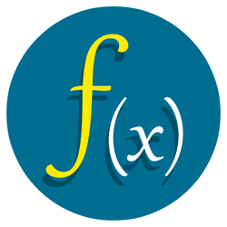

CS Studio
Mobile applications are becoming increasingly important to our consumption of media, news, social interaction, and learning. In this course, students will learn how to create mobile apps using React Native, a popular platform-agnostic framework. As an online blended high school course, students will design and build applications to run on their own smartphones and will use the latest tools and technologies available for mobile app development. Students will complete a large end-of-course project where they will practice project development skills to create an app to solve a specific problem.
Students learn how to create video games in JavaScript! While this course is introductory, it is an honors-level course. Its curriculum teaches the foundations of computer science and basic programming, with an emphasis on helping students develop logical thinking and problem solving skills. Once students complete the course, they will have learned material equivalent to a semester college introductory course in Computer Science and be able to program in JavaScript. The JavaScript course will provide the prerequisite information needed before students apply programming concepts to their physical Arduino device.
Learning Environment
The course utilizes a blended classroom approach. The content is fully web-based, with students writing and running code in the browser. Teachers utilize tools and resources provided by CodeHS to leverage time in the classroom and give focused 1-on-1 attention to students. Each unit of the course is broken down into lessons. Lessons consist of video tutorials, short quizzes, example programs to explore, and written programming exercises. All assignments will be online and easily accessible
Google Classroom
Course Overview
Unit 0: Mobile Apps Prerequisite
|
 |
This is only for those who do not have any web design experience. If you did not take Web Development or just need a refresher bootcamp for HTML and CSS |
Unit 1: Introduction to Mobile Apps
|
|
Students will be introduced to the mobile apps course and the React Native framework and its program structure and syntax. Students will also preview some of the tools and technologies they will use to build and run their apps. |
Unit 2: Components and the Stylesheet
|
 |
Students are introduced to components, the backbone of building apps with React Native. They learn about the stylesheet object and how to add custom style attributes to their apps. |
Unit 3: Buttons and Text Boxes
|
|
Students use the TouchableHighlight to create "buttons" that add a layer of functionality. Students also learn about how to create and use text boxes in their programs. |
Unit 4: Advanced Layouts and Images
|
|
Students learn how to add images to their apps to further customize the building experience. They gain a deeper understanding of mobile apps layouts using Flex values and the Dimensions API. |
|
|
Students learn how to use state values and how to update the state of their app in various ways to create quick, dynamic programs. They will learn how mathematical equations and string methods can be used to alter values as the user interacts with their programs. |
Unit 6: Creating Multiple Screens
|
|
Students learn how to take their apps to the next level by adding in functionality that allows for content and interactivity on multiple screens. |
Unit 7: Working with Conditionals
|
 |
Students use conditionals to allow for more flexible apps. They also learn how parameters are used inside functions. |
Unit 8: Using Collections of Data
|
 |
Students learn how to use arrays to organize and use larger data sets in their programs. They’ll learn how to use mapping to quickly assign styling and layouts to large amounts of data. |
Unit 9: Working with ScrollView
|
 |
Students learn how to use ScrollView inside their programs to show more content on one page than can fit on the screen. Students learn how to scroll through images and text and how mapping can be used with ScrollView to move through large sets of data. |
Unit 10: JavaScript and Graphics
|
|
Students will learn the basics of JavaScript, including variables, user input, control structures, functions with parameters and return values, and basic graphics. |
Unit 11: Intro to Arduino
|
|
Students will go through the basics of the Arduino device, such as how to light up and change the brightness of LEDs, and learn how variables can be used to write more versatile programs. Students will build circuits to control LEDs and motors with the Arduino and explore how pseudocode can be used to structure programs from the start. |
Unit 12: JavaScript Control Structures
|
|
Students will learn how to use control structures such as if/else statements and loops to make more advanced programs in JavaScript. |
Unit 13: Functions and Parameters
|
|
Students learn to write reusable code with functions and parameters. |
Unit 14: Program Control with Arduino
|
|
Students will learn how to apply control structures, such as if/else statements and loops to create programs that will react to the outside world. They will build programs that use sensors to detect temperature, light, and distance and make decisions based on the information collected. |
Unit 15: Animation and Games
|
|
Students will learn how to make objects move around the screen. They will also learn how to let the user interact with your program with the mouse. At the end of this section, they will program their very own video game. |
Unit 16: Advanced Arduino
|
|
Students will have a chance to explore all of the capabilities of the Arduino on their own! They will research, explore, and teach their peers about new sensors, follow directions to build an advanced device, and have a chance to create their very own Arduino machine. |
State Competencies
SC. 3: Understand event handling and user interaction in order to understand data flow and control.
SC. 6: Understand the fundamental concepts of entrepreneurship and how entrepreneurship influences the economy.
SC. 7: Understand the importance of personal growth and leadership to enhance career success.
SC. 8: Understand the necessary employability skills in order to achieve success in today’s workplace.
Enduring Understandings
EU. 1: The student will understand that there are multiple components of learning program languages.
EU. 2: The student will understand that certain methods of development are more efficient and effective based on expected outcomes.
EU. 3: The student will understand that algorithms are tools for developing and expressing solutions to computational problems.
EU. 4: The student will understand that different target audiences use certain platforms for particular usability.
EU. 5: The student will understand that proper planning and documenting programs allows for maintenance and sustainability.
EU. 6: The student will understand security and ethics in regards to computing.
EU. 7: The student will understand that incorporating critique and feedback into design creates more robust programs.
EU. 8: The student understands the concepts and influences of entrepreneurship as well as the effects leadership can have on personal growth and career success.